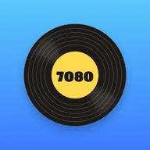
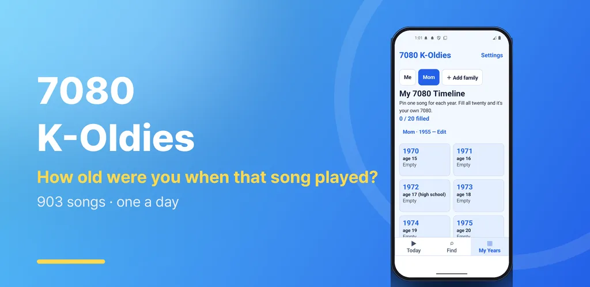
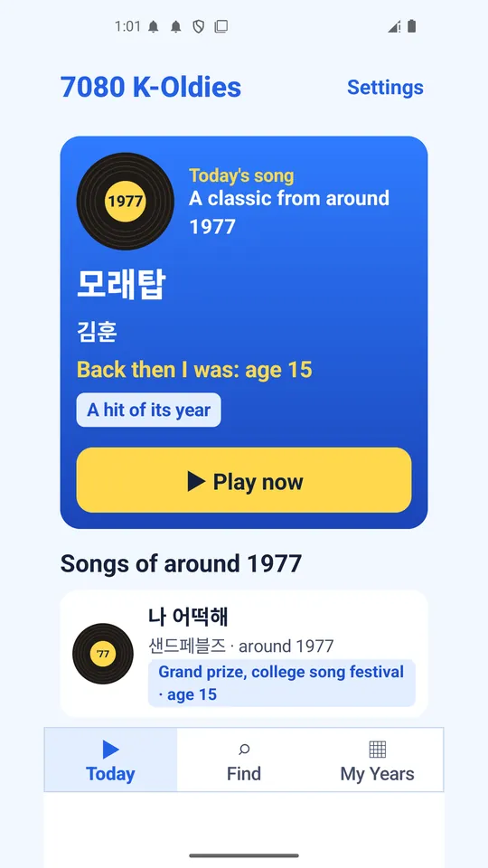
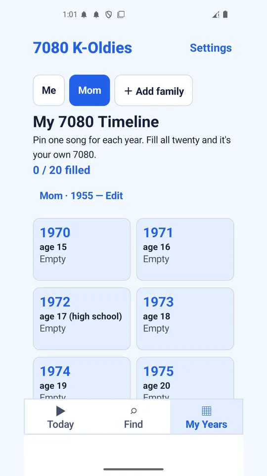
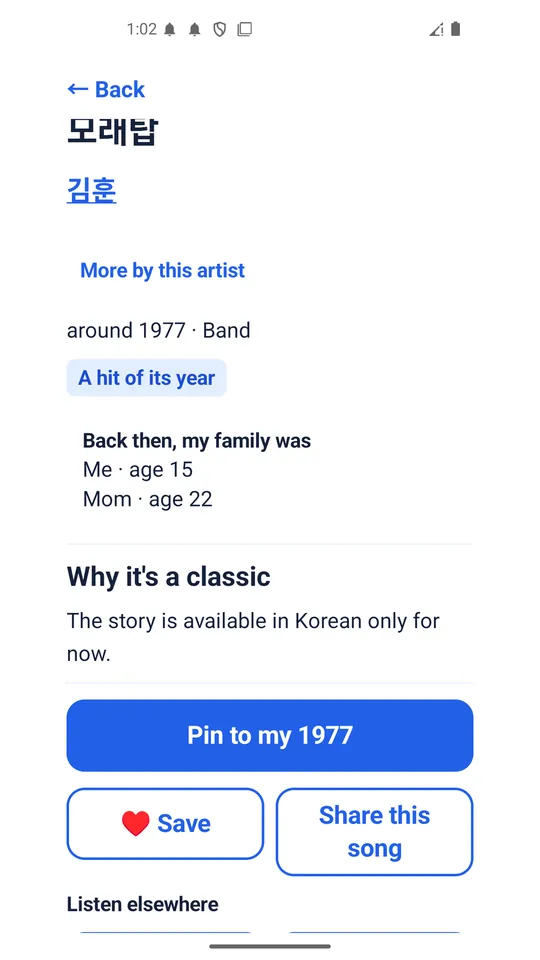
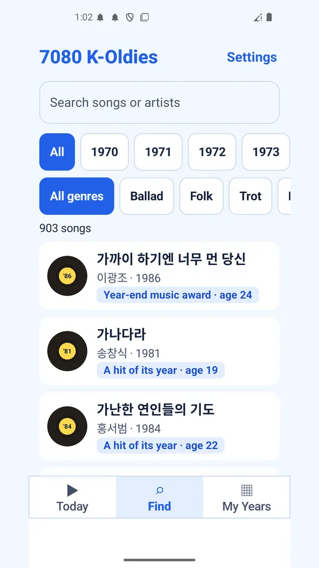

7080 K-Oldies: Time Machine
How old were you when that song played? 903 Korean classics from 1970 to 1989.





About this app
"When that song came on, I was twenty-two."
The songs from the coffee-house radio, from guitar sing-alongs, from the cassette you rewound again and again. How old were you back then?
7080 K-Oldies brings back 903 Korean classics from 1970 to 1989, one song at a time: why it became a classic, and the official video to hear it again. Every song shows how old you were when it came out.
■ "Back then, I was..." on every song
- Pick your birth year once, and every song shows your age at the time in large type - "22", "high school", "3 years before I was born".
- Add your mother's or father's birth year, and the same song becomes "the song from Mom's twenties".
- Make a "Mom at twenty, the songs of that year" card and send it to your family.
- Names and birth years stay on your phone and are never sent anywhere.
■ Song of the day
- The home screen opens with today's song. One tap on Play and the video starts.
- All twenty years, 1970 to 1989, take turns day by day. For the 1980s, that week's No. 1 on the broadcast chart comes first.
- Every day at 11 AM, a notification brings you the song of the day. Change the time or turn it off in Settings.
■ My 7080 timeline
- Twenty slots, 1970 to 1989. Pick one song of your own for each year.
- Turn your timeline into a card and share it with friends and family.
■ Why it is a classic
- Each song carries badges that show why it is remembered: "5 weeks in a row at No. 1 on the broadcast chart", "year-end music award", "college song festival grand prize", "on a critics' list of greatest albums".
- A short note on the song and its era is written for each song. Notes, song titles and artist names are in Korean for now; the rest of the app (years, badges, ages, menus) is in English. No lyrics are included.
- 423 weeks of broadcast chart No. 1s from 1981 to 1989 are included.
- We never make up a No. 1. Only records we could confirm become badges.
■ Search and saved songs
- Search by title or artist, and browse by year or genre (ballad, folk, trot, rock, group sound).
- Starter sets for first-time listeners, such as "First 5 folk songs" and "First 5 ballads".
- Save the songs you want to hear again with ♥.
■ Big and simple
- Large text and large buttons, with just three tabs: Today, Search, My Years.
- No sign-up and no login.
■ About the videos
- Most songs play inside the app in the official YouTube player, using videos uploaded by the rights holders. For songs without one, the app takes you to a YouTube search.
- Many 1970s songs have no footage from the time, so you may see the original singer performing it on TV years later.
- The app never downloads or stores any audio. Playback stops when you turn off the screen or leave the app.
Song info and notes are bundled in the app, but video playback needs an internet connection.
The app is supported by ads: a banner at the bottom of the screen and interstitial ads.
Android · free with ads · Developer: RealTunaLove · Store listing in 2 languages
Background story: why I built it